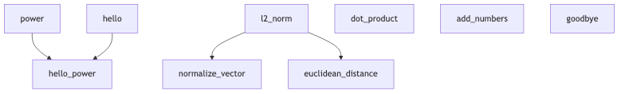

Experimenting aider in a org file
Table of Contents
This is a test file.
1. Math functions
1.1. Power
This function is useful for Mathematics.
def power(a, b): return a ** b
2. Diagrams

2.0.1. Testing power
2.1. hello
def hello(name): """ Returns a greeting message with the provided name. Parameters: ----------- name : str The name to include in the greeting Returns: -------- str A greeting string in the format "Hello, {name}" """ return "Hello, " + name
2.1.1. Testing hello
hello("Luis")
Hello, Luis
2.2. hellopower
def hello_power(name): """ Returns a greeting message with the provided name and the power of 2 of the name length. Parameters: ----------- name : str The name to include in the greeting Returns: -------- str A greeting string that includes the name and the power of 2 of the name length """ greeting = hello(name) name_length = len(name) name_length_squared = power(name_length, 2) return f"{greeting}! The square of your name length ({name_length}) is {name_length_squared}."
2.2.1. Testing hellopower
hello_power("Luis")
Hello, Luis! The square of your name length (4) is 16.
2.3. Making a fancy thing
I will try to make a fancy thing here!
def add_numbers(a, b): # This function is supposed to return the sum of a and b result = a + b # Fixed: now using addition as intended return result print(f"The sum of 5 and 4 is: {add_numbers(5, 4)}")
The sum of 5 and 4 is: 9
2.4. Implementation of the L2 norm.
Implementing the L2 norm.
def l2_norm(vector): """ Calculates the L2 norm (Euclidean norm) of a vector. Parameters: ----------- vector : list or array-like The input vector whose L2 norm is to be calculated Returns: -------- float The L2 norm of the input vector """ # Calculate sum of squares sum_of_squares = sum(x**2 for x in vector) # Return square root of the sum return power(sum_of_squares, 0.5) # Using our power function with exponent 0.5 for square root
2.4.1. Testing L2 norm
# Test the L2 norm function test_vector = [3, 4] # This should give us 5 (the Pythagorean theorem) l2_norm(test_vector)
5.0
2.5. Vector Operations
def dot_product(vector1, vector2): """ Calculates the dot product of two vectors. Parameters: ----------- vector1 : list or array-like The first input vector vector2 : list or array-like The second input vector Returns: -------- float or int The dot product of the two vectors """ if len(vector1) != len(vector2): raise ValueError("Vectors must have the same length") return sum(a * b for a, b in zip(vector1, vector2))
2.5.1. Testing dot product
# Test the dot product function v1 = [1, 2, 3] v2 = [4, 5, 6] print(f"The dot product of {v1} and {v2} is: {dot_product(v1, v2)}")
The dot product of [1, 2, 3] and [4, 5, 6] is: 32
2.6. Vector Normalization
def normalize_vector(vector): """ Normalizes a vector to unit length using the L2 norm. Parameters: ----------- vector : list or array-like The input vector to be normalized Returns: -------- list The normalized vector """ norm = l2_norm(vector) if norm == 0: raise ValueError("Cannot normalize a zero vector") return [x / norm for x in vector]
2.6.1. Testing vector normalization
# Test the normalize_vector function test_vector = [3, 4] normalized = normalize_vector(test_vector) print(f"Normalized vector: {normalized}") print(f"Verification - L2 norm of normalized vector: {l2_norm(normalized)}")
Normalized vector: [0.6, 0.8] Verification - L2 norm of normalized vector: 1.0
2.7. Distance Calculation
def euclidean_distance(point1, point2): """ Calculates the Euclidean distance between two points. Parameters: ----------- point1 : list or array-like The first point coordinates point2 : list or array-like The second point coordinates Returns: -------- float The Euclidean distance between the points """ if len(point1) != len(point2): raise ValueError("Points must have the same dimensions") # Create a vector of differences diff_vector = [a - b for a, b in zip(point1, point2)] # Return the L2 norm of the difference vector return l2_norm(diff_vector)
2.7.1. Testing distance calculation
# Test the euclidean_distance function point_a = [1, 2, 3] point_b = [4, 5, 6] distance = euclidean_distance(point_a, point_b) print(f"The distance between {point_a} and {point_b} is: {distance}")
The distance between [1, 2, 3] and [4, 5, 6] is: 5.196152422706632
2.8. Goodbye
def goodbye(name): """ Returns a farewell message with the provided name. Parameters: ----------- name : str The name to include in the farewell Returns: -------- str A farewell string in the format "Goodbye, {name}" """ return "Goodbye, " + name
2.8.1. Testing goodbye
goodbye("Luis")
Goodbye, Luis
2.9. Preparing the data
2.9.1. Load the 20newsgroup dataset from scikit learn datasets
from sklearn.datasets import fetch_20newsgroups # Load the dataset newsgroups = fetch_20newsgroups(subset='all', remove=('headers', 'footers', 'quotes'))
2.9.2. Splits the dataset into test and train
from sklearn.model_selection import train_test_split # Split the dataset X_train, X_test, y_train, y_test = train_test_split(newsgroups.data, newsgroups.target, test_size=0.2, random_state=42)
2.9.3. Apply TF-IDF to it
from sklearn.feature_extraction.text import TfidfVectorizer # Initialize the TF-IDF vectorizer vectorizer = TfidfVectorizer() # Fit and transform the training data, transform the test data X_train_tfidf = vectorizer.fit_transform(X_train) X_test_tfidf = vectorizer.transform(X_test)